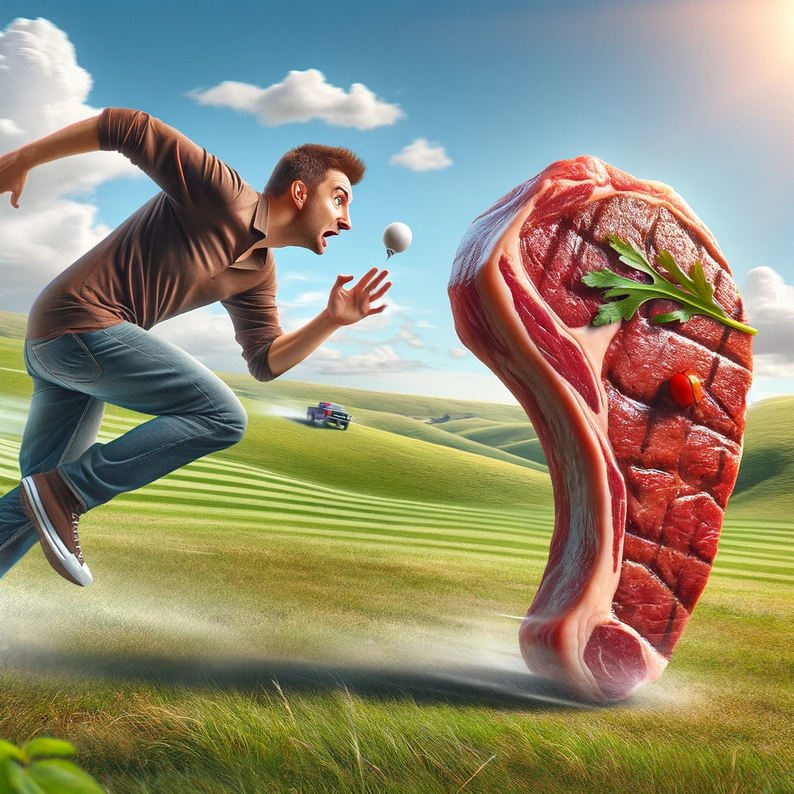

Near and far opportunities.
When you are stressed you tend to get short sighted. Your body is in fight or flight mode and you don't want to have any opportunities go to waste. It's analogous to starving and then suddently a medium rare steak runs by. You are going to spend as much energy as you can to get the steak because you don't know when you'll see a steak again.
You will also spend a lot of energy looking for steaks. Because you can't afford that a steak runs by and you miss it. Which means that you'll turn a lot of stones with nothing but sand underneath.
It's costly living at the bottom. No energy is conserved because frankly, you can't afford it. This is not a sustainable state, sooner or later you're to get depleted. Your system will break down. Anxiety, depression, burnout, all symptoms of the same thing.
Conversely, when you have your kitchen stocked with steaks then there is no need to spend energy chasing a passing steak, so you won't worry about looking for one either. You get to conserve all of your energy. When you have an abundance of resources your serotonin levels gets high and you feel good. Because THIS IS WHERE YOU ARE SUPPOSED TO BE, and the system rewards that.
What does this have to do with anything, especially in the now which I have in the title, supposedly it means something. Well, the modern environment is tricky. There are no steaks running by and the are no lions hiding in the bushes. What you have is deadlines, bills and more deadlines. If you start inturpreting these as lions then your mind will be further and further away from the present moment. You'll spend energy thinking about how you will finish you job assignment and how to pay your electricity bill. One way out of it is mindfulness. And I don't mean that in a hippy-dippy way. I mean that if you find yourself doing one thing, while thinking about a thousand other things, then you should remind yourself that you are spending too much energy looking for steaks. Concentrate on being in the now, let go of other things until it's time to do them, and then your system will reward you.